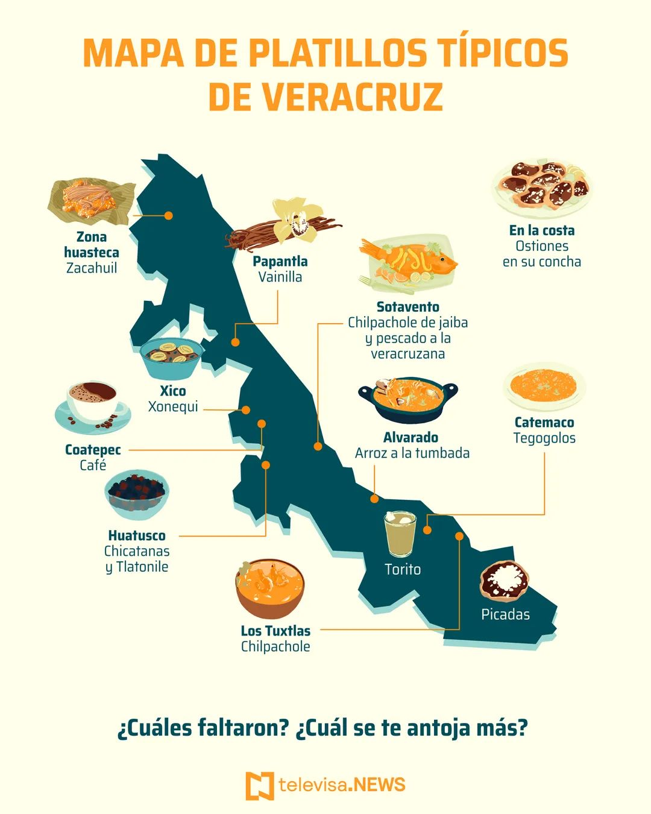
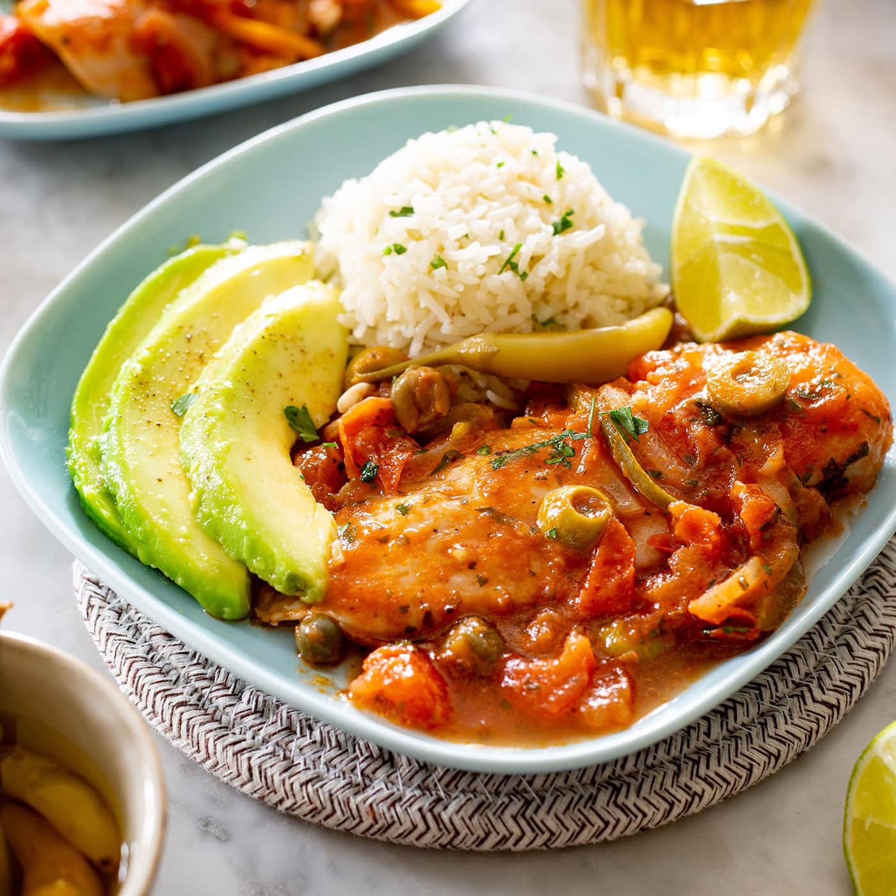
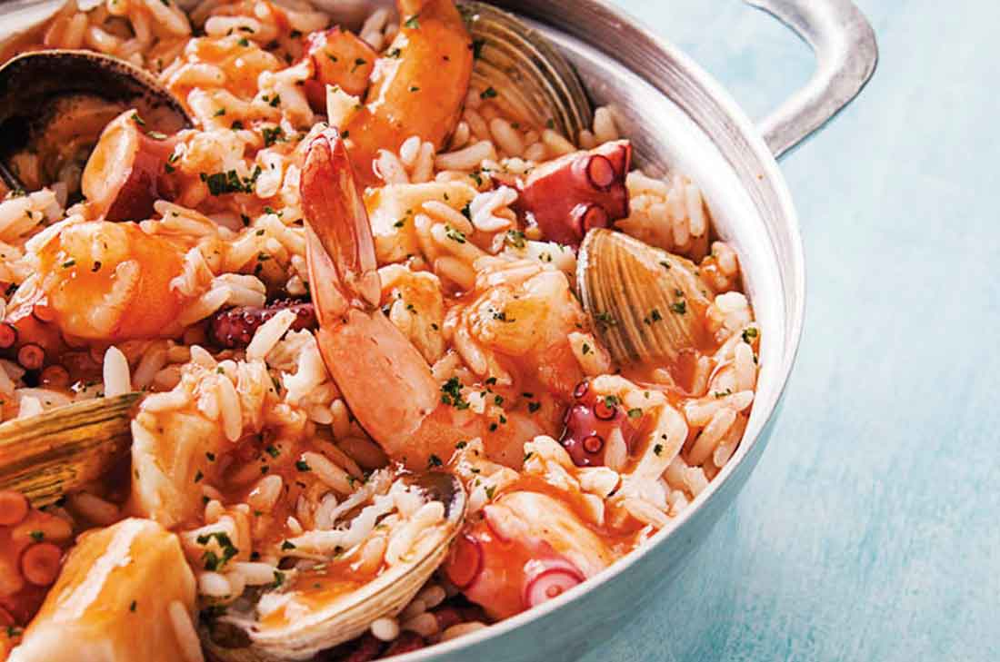
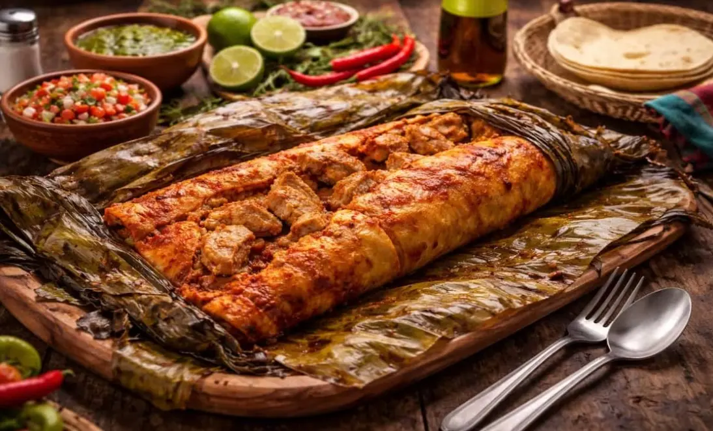
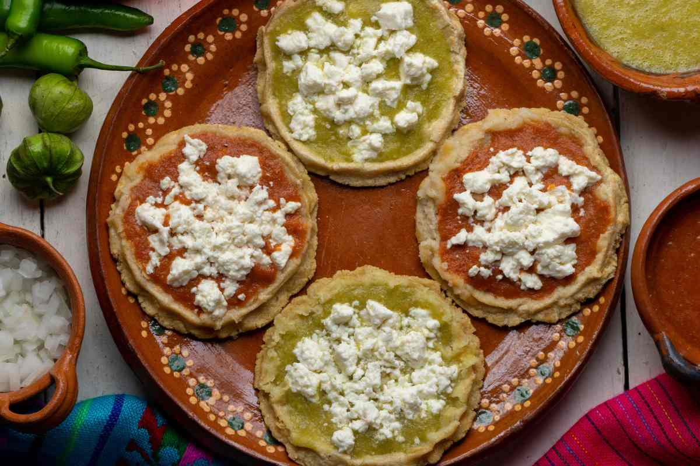
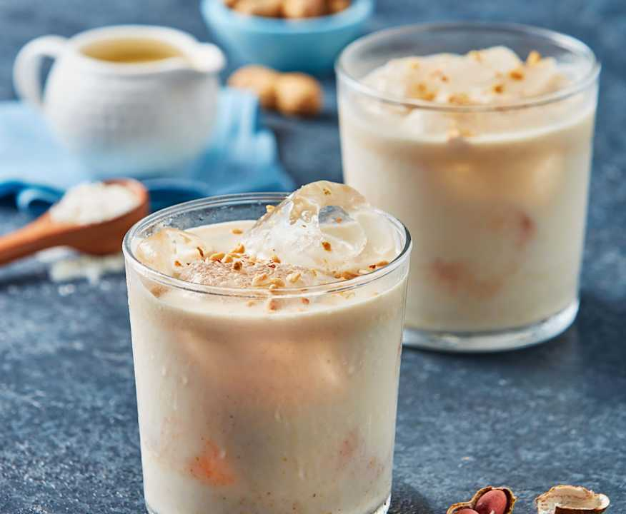

"La cocina veracruzana destaca por la combinación de ingredientes del mar, la tierra y la influencia española."

La gastronomía veracruzana es una de las más variadas de México, gracias a la riqueza de sus costas, ríos y campos. Se caracteriza por el uso de pescados, mariscos, jitomate, aceitunas, alcaparras, vainilla y chiles. La mezcla de tradiciones indígenas, españolas y afrodescendientes ha dado origen a platillos únicos que representan la identidad cultural del estado de Veracruz.
A continuación se presentan algunos de los alimentos más representativos del estado de Veracruz y sus principales ingredientes.
| Nombre | Imagen | Ingredientes |
|---|---|---|
| Pescado a la Veracruzana |
 |
Pescado, jitomate, aceitunas, alcaparras, ajo, cebolla y chiles. |
| Arroz a la Tumbada |
 |
Arroz, camarón, pulpo, pescado, jitomate, cebolla y especias. |
| Zacahuil |
 |
Masa de maíz, carne de cerdo, pollo, chiles y hojas de plátano. |
| Picadas |
 |
Tortillas gruesas de maíz, salsa roja o verde, queso y cebolla. |
| Torito |
 |
Leche, aguardiente de caña, azúcar y sabores como cacahuate, coco o café. |
¿Sabías que...?
Veracruz es reconocido como el principal productor de vainilla
en México. Este ingrediente, originario de la región del Totonacapan,
es utilizado en numerosos postres y bebidas y es apreciado en todo el mundo
por su aroma y sabor.
"Veracruz, donde el mar y la tradición se unen en cada platillo."